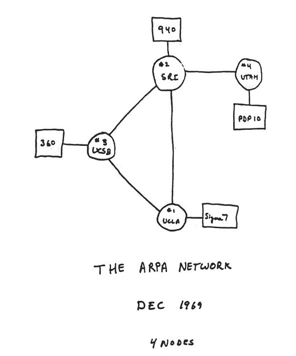

1964 (Baran - packet switching on military nets)
Baran investigated the use of packet switching for voiceover military networks. It was then when packet switching started to be implemented onto networks.
Kleinrock's theory showed the world the effectiveness of packet switching instead of direct wire technology, the technology of old phones, and inspired our internet packet switching method today.
Baran investigated the use of packet switching for voiceover military networks. It was then when packet switching started to be implemented onto networks.
The Advanced Research Projects Agency (ARPA) lead the creation of the first packet switched computer network.

Surprisingly, this was installed on labour day, under Kleinrock's supervision to make sure nothing went wrong. The first packet switch was installed, while three additional were installed without Klienrock's help. The very first use of packet switching was to perform a remote login, which crashed the system.
The public demo displayed the NCP, a first host to host protocol, which also lead to the very first online communication feature, email.
ALOHAnet was another company that provided packet switching networks, and they deployed a satellite to link universities on the hawaiian islands.
Interconnecting networks were done by Vinton Cerf and Robert Kahn, and they used the term of "internetting" to desribe their work.
The Ethernet protocol was developed by Metcalfe and Boggs, for wire-based shared networks. This type of protocol was to ensure the connection between different electrical devices.
Interconnecting networks were done by Vinton Cerf and Robert Kahn, and they used the term of "internetting" to desribe their work.
The Mintel system was developed by the French government, which started the connection of internet at home. Mintel also offered many services to allow more usage in their system.
The email protocol was properly defined, so it could be made for public usage. This was the start of online communication.

The TCP congestion control was to make services faster, and ensure a good quality experience with the system.
New networks have started internationally, so people from different countries can also have internet access as well.
Since other technologies were more further ahead than ARPAnet, it was decommissioned from its task, and newer networks took over.
Tim Berners-Lee created the web at Cern, developping initial versions of HTML, HTTP, web servers, and browsers. This was the start of the web, allowing people to share information to everyone on the internet.

The web started to have tremendous growth, with many companies creating their own applications, rivalling the previous application and other competition
Wireless technology was impossible before newer technologies came in, revolutionising the internet, and reducing the need for ethernet cables.
The internet gained more different apps, such as instant messaging and P2P file sharing, allowing people to share pictures and documents online. It also established network security to protect the 100 million users from hackers.
Social media started appearing, starting with Facebook, where you could share information easily, and talk to people easier online.

This can bypass all of the internet traffic, and allow for a fast usage of the internet, similar to what you have right now.

Kurose Ross, 2017, Computer Networking: A Top-down Approach, Pearson
Computer Hope, Binary, Last modified: 12/04/21, retrieved from https://www.computerhope.com/jargon/b/binary.htm#:~:text=Binary%20is%20a%20base%2D2,processor%20instructions%20used%20every%20day.
Unknown, What are bits, bytes, and other units of measure for digital information? , Last modified: 18/01/18, retrieved from https://kb.iu.edu/d/ackw#:~:text=A%20bit%20is%20a%20binary,of%20off%20or%20on%2C%20respectively.
Tech Target Contributer, decimal , Last modified: 09/2005, retrieved from https://whatis.techtarget.com/definition/decimal